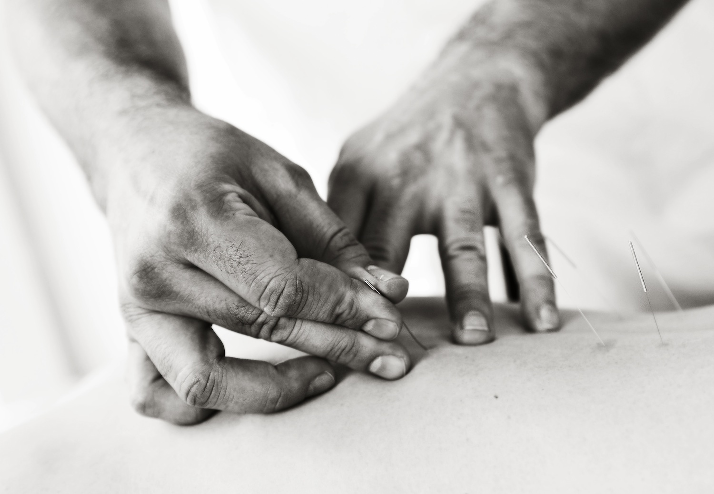
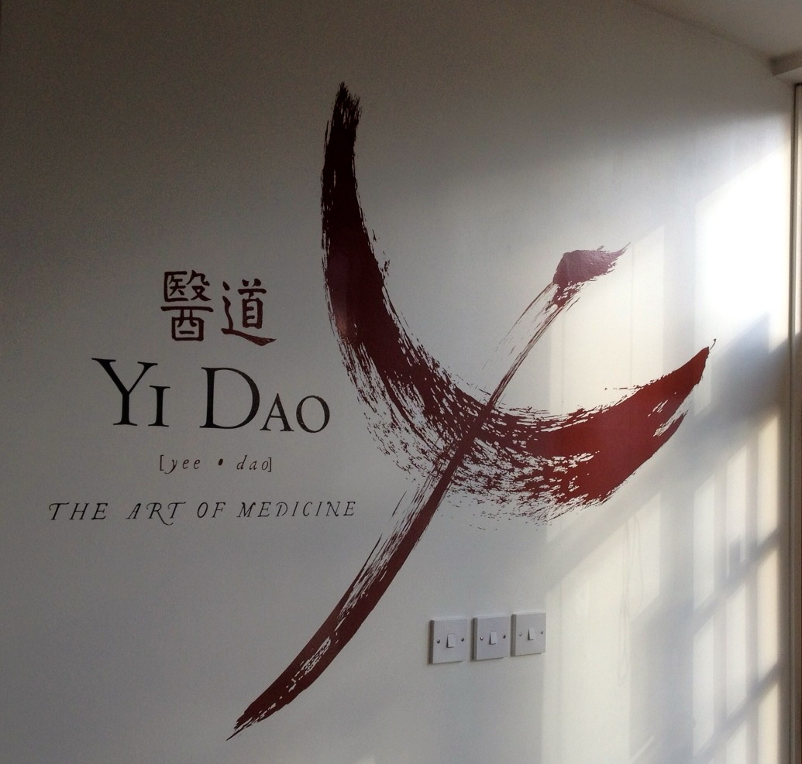

The art of medicine.
Traditional Chinese acupuncture, Tui Na bodywork and herbal medicine from an experienced, hands-on team — treating painful conditions, injuries and internal disease at the root, not just the symptom.
醫道 — “the art of medicine”
Founded in 2012 by Conny & Zarig Cooper, Yi Dao Clinic offers every branch of Chinese medicine — acupuncture, herbal medicine and Tuina/bodywork — from experienced, knowledgeable practitioners. Our calligraphy, painted on our own wall, translates as “the art of medicine”, “the way of healing”, or “a physician’s skill”. Our crane logo is a Chinese symbol of health and longevity — what we aim to offer everyone who comes through our door.
Read our full story & meet the teamHow we treat you
A typical session may combine any of the below, tailored to what you actually need — not a fixed routine.
Acupuncture
Hands-on, targeted needling — not 20 minutes left alone with music. Every session aims for a noticeable change.
About acupuncture →Tui Na / Bodywork
Traditional Chinese physical therapy — strong, focused techniques used in Chinese hospitals for pain and injury.
About Tui Na →Chinese Herbal Medicine
Treatment taken twice a day for faster, whole-body results — backed by over two millennia of clinical use.
About herbal medicine →Abdominal Zang Fu Acupressure
Deeply relaxing manual work on the abdominal organs — effective for digestion, stress and sleep.
About abdominal massage →Also under one roof
A calm space on Mill Lane



Conny & Zarig Cooper

Conny Cooper
Chief Practitioner — Acupuncture, Herbal Medicine, Tuina
BSc Acupuncture (LCTA, 2006) and MSc Chinese Herbal Medicine (University of Westminster, 2015). Trained at Zhejiang Hospital of Chinese Medicine, Hangzhou, and has worked with the Pain Clinic at the Royal Free Hospital.

Zarig Cooper
Chief Practitioner — Acupuncture, Tuina, Herbal Medicine
BSc Acupuncture & Tui Na diploma (London College of Traditional Acupuncture, 2008), Diploma in Herbal Medicine (Institute of Chinese Medicine, 2018). Also trained at Zhejiang Hospital of Chinese Medicine, specialising in spinal conditions.
What our patients say
I’ve had problems with my back for many years and have tried many different practitioners without success. Then I found Connie — as an acupuncturist she is in a league of her own. She immediately found the cause of the problem.
P. R. — back pain
I’ve had severe hip pain for several years and was told my only option was a hip replacement. After a few sessions with Conny the pain is greatly reduced and the surgery is off the cards.
C. D. — wear and tear of the hip
Zarig has an intuitive ability to pinpoint the cause of my problems and treat them in a progressive and painless way. His calm, easy-going approach makes it easy to relax.
J. V. — lower back pain & tension headaches
Also home to Root & Branch College
Conny & Zarig also run Root & Branch College, a 3-year degree-level course in acupuncture and Tuina, alongside CPD for qualified practitioners.
Visit rootandbranchcollege.com →61 Mill Lane, West Hampstead, NW6 1NB
Open across the week — Monday to Sunday, by appointment. Exact days vary by practitioner and treatment, so call or email to check availability.